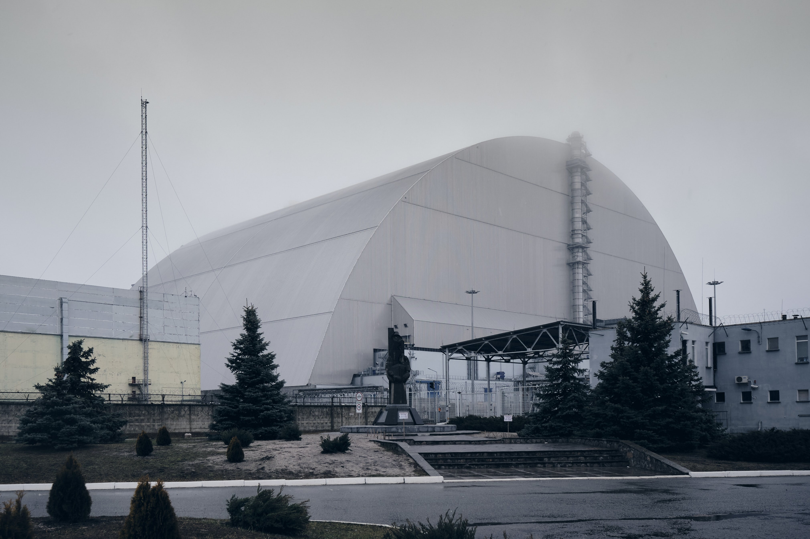
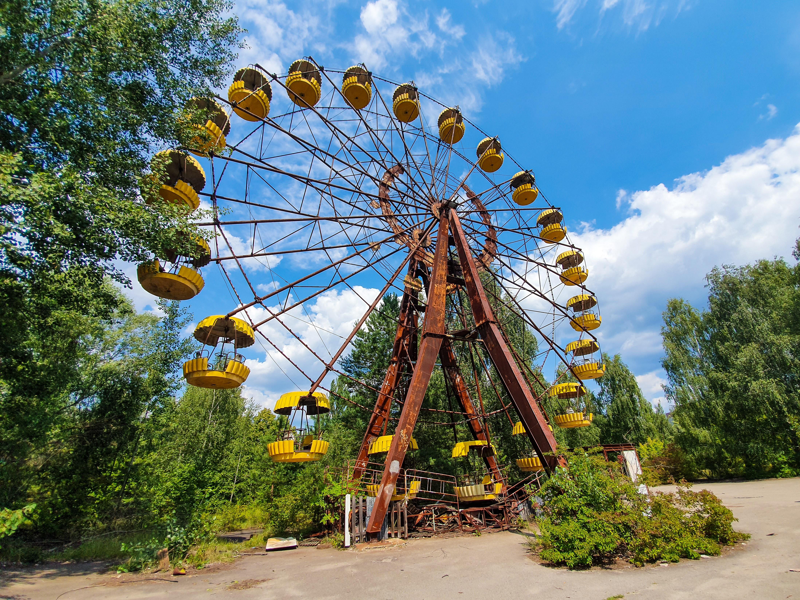

The Chernobyl Exclusion Zone
The Size
 The Chernobyl Exclusion Zone (CEZ) is one of the most radioactively
contaminated sites in the world. The area is highly heterogeneously
contaminated by a number of radionuclides including:
The Chernobyl Exclusion Zone (CEZ) is one of the most radioactively
contaminated sites in the world. The area is highly heterogeneously
contaminated by a number of radionuclides including:
- 137Cs,
- 90Sr,
- 241 Am and
- Pu- isotopes.
Established shortly after the accident in 1986, the CEZ was initially
the area within the 30 km radius around the Chernobyl Nuclear Power
Plant, although, the borders have subsequently expanded.
The
Exclusion Zone covers an area of approximately 2,600 km2 (1,000 sq mi)
in Ukraine immediately surrounding the Chernobyl Nuclear Power Plant
where radioactive contamination from nuclear fallout is highest and
public access and inhabitation are restricted. Other areas of
compulsory resettlement and voluntary relocation not part of the
restricted exclusion zone exist in the surrounding areas and
throughout Ukraine.[8] In February 2019 it was revealed that talks
have been underway to redraw the boundaries of the Exclusion Zone to
reflect the declining radioactivity of the Zone's outer areas.
The Sarcophagus
The Chernobyl Nuclear Power Plant sarcophagus or Shelter was a
massive steel and concrete structure covering the nuclear reactor
number 4 building of the Chernobyl Nuclear Power Plant. It was
designed to limit radioactive contamination of the environment
following the 1986 Chernobyl disaster, by encasing the most dangerous
area and protecting it from climate exposure. It was located within a
large restricted area known as the Chernobyl Exclusion Zone.
Chernobyl security measure timeline:
- 26 April 1986 – 'Liquidators' sent in where machinery failed.
- 20 May 1986 – Construction begins on concrete sarcophagus.
- 1992 – Sliding arch selected as new covering.
- September 2010 – New Safe Confinement work begins.
- 8 October 2018 – Solar plant brings life back to Chernobyl.
- 14 April 2020 – Forest fires threaten the area.
The Nature
 The Ukrainian area (approximately 2600 km2) contains forests,
abandoned farmlands, wetlands, flowing and standing waters, deserted
villages and urban areas. The Belarusian area (approximately 2200 km2)
consists mainly of swamps, marshes and peat-bogs. Forest occupies
about one half of the Belarusian territory; areas not forested are
mostly former agricultural lands and meadows. Both the Ukrainian and
Belarussian exclusion zones are now largely designated as protected
wildlife reserves; their combined area creates mainland Europe's third
largest nature reserve.
The Ukrainian area (approximately 2600 km2) contains forests,
abandoned farmlands, wetlands, flowing and standing waters, deserted
villages and urban areas. The Belarusian area (approximately 2200 km2)
consists mainly of swamps, marshes and peat-bogs. Forest occupies
about one half of the Belarusian territory; areas not forested are
mostly former agricultural lands and meadows. Both the Ukrainian and
Belarussian exclusion zones are now largely designated as protected
wildlife reserves; their combined area creates mainland Europe's third
largest nature reserve.
Interesting facts
about wildlife in Chernobyl:
- The animals of Chernobyl survived against all odds.
- Bears and wolves outnumber humans around the Chernobyle disaster site.
- Most Chernobyl animals don't look any different from their non-Chernobyl counterparts.
- Radiation may have killed off Chernoby's insects.
- Despite looking normal, Chernobyl's animals and plants are mutants.
- The absence of humans is returning Chernobyl to wilderness.
- Przewalski’s horse is making a comeback.
- You can adopt Chernobyl puppy.
Take a look at National Geopgraphic's article on life in Chernobyl three decades later.
The Civilization
 The 30 km zone is estimated to be home to 197 samosely living in 11
villages as well as the town of Chernobyl. This number is in decline,
down from previous estimates of 314 in 2007 and 1,200 in 1986. These
residents are senior citizens, with an average age of 63. After
repeated attempts at expulsion, the authorities have accepted their
presence and allowed them to stay with limited supporting services.
Residence is now informally permitted by the Ukrainian government.
The 30 km zone is estimated to be home to 197 samosely living in 11
villages as well as the town of Chernobyl. This number is in decline,
down from previous estimates of 314 in 2007 and 1,200 in 1986. These
residents are senior citizens, with an average age of 63. After
repeated attempts at expulsion, the authorities have accepted their
presence and allowed them to stay with limited supporting services.
Residence is now informally permitted by the Ukrainian government.
Chernobyl town, located outside of the 10 km Exclusion
Zone, was evacuated following the accident, but now serves as a base
to support the workers within the Exclusion Zone. Its amenities
include administrative buildings, general stores, a canteen, a hotel,
and a bus station. Unlike other areas within the Exclusion Zone,
Chernobyl town is actively maintained by workers, such as lawn areas
being mowed and autumn leaves being collected.
BBC article
The people who moved to Chernobyl
allows a deeper understanding behind the decision to move back
home.
The Tourism
There have been growing numbers of visitors to the Exclusion Zone
each year, and there are now daily trips from Kyiv offered by multiple
companies. In addition, multiple-day excursions can be easily arranged
with Ukrainian tour operators. Most overnight tourists stay in a hotel
within the town of Chernobyl, which is located within the Exclusion
Zone. According to an exclusion area tour guide, as of 2017, there are
approximately 50 licensed exclusion area tour guides in total working
for approximately nine companies. Visitors must present their
passports when entering the Exclusion Zone, and are screened for
radiation when exiting both at the 10 km checkpoint and at the 30 km
checkpoint. The Exclusion Zone can also be entered if an application
is made directly to the zone administration department.
Best tours of Chernobyl:
- Private tour in Chernobyl
- 1-Day Group Tour to Chernobyl from Kiev
- 2-Day Tour to Chernobyl and Pripyat
- Private Guided Tour of Kiev Pechersk Lavra
- Day Trip to Chernobyl Zone and Pripyat with Lunch and more...